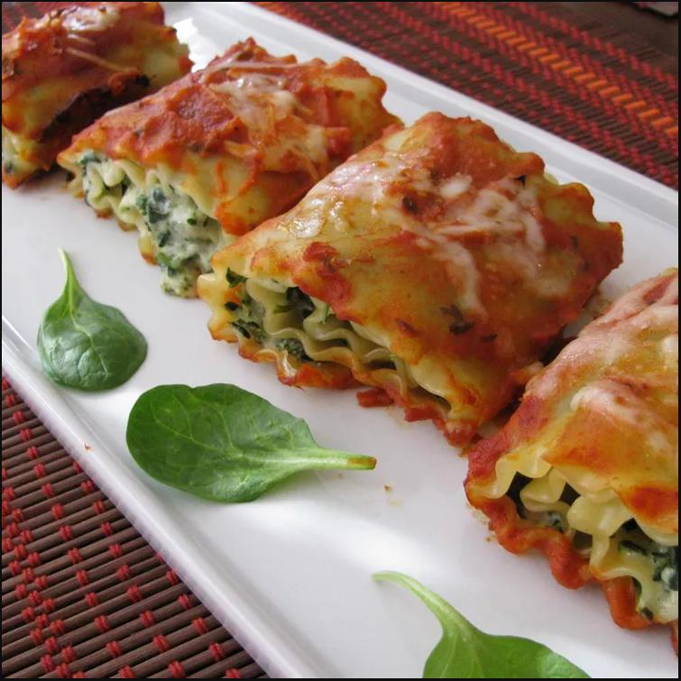

Lasagna

Spinach Lasagna Rolls
It's a roll of lasagna. With cheese and spinach. Think sideways cinnamon roll but it's made of lasagna and healthy.
Ingredients
- 1 (10 ounce) package frozen chopped spinach, thawed, well drained
- 1 1/4 cups KRAFT Shredded Low-Moisture Whole Milk Mozzarella Cheese, divided
- 4 ounces PHILADELPHIA Cream Cheese, softened
- 1/4 cup Kraft Grated Parmesan Cheese
- 6 lasagna noodles, cooked, drained
- 2 cups spaghetti sauce
Steps
- Preheat the oven to 375 degrees F (190 degrees C).
- Mix together spinach, 1 cup mozzarella cheese, cream cheese, and Parmesan cheese in a large bowl until well blended; spread onto noodles and roll up tightly. Place rolls, seam-side down, in a 9-inch square baking dish. Top with sauce and remaining 1/4 cup mozzarella.
- Bake in the preheated oven until heated through, about 30 minutes.